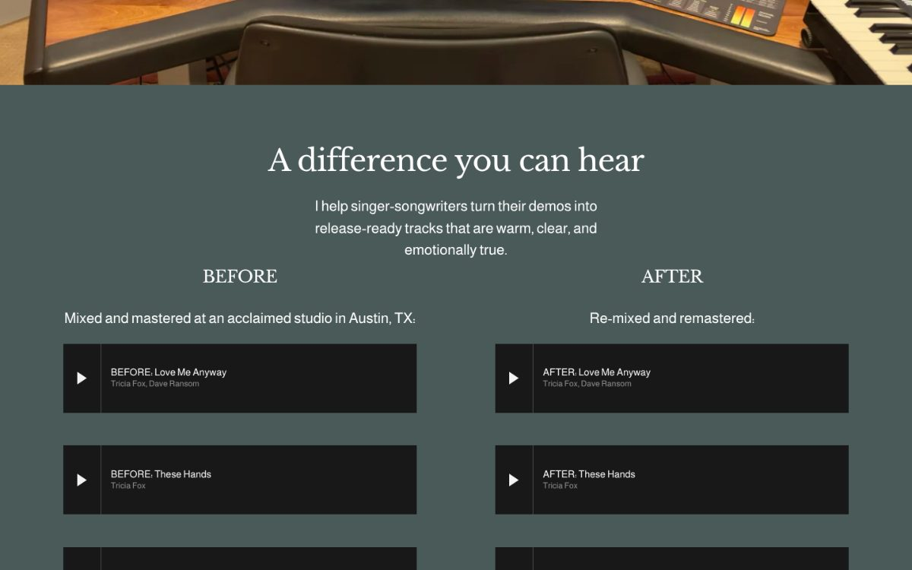
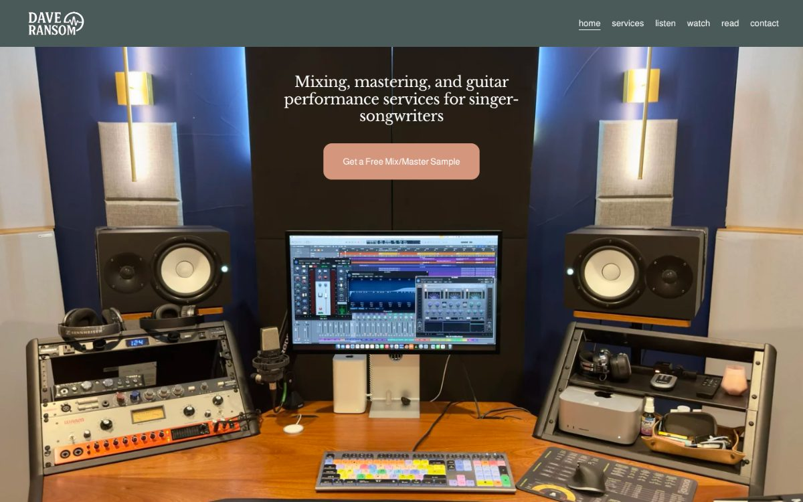
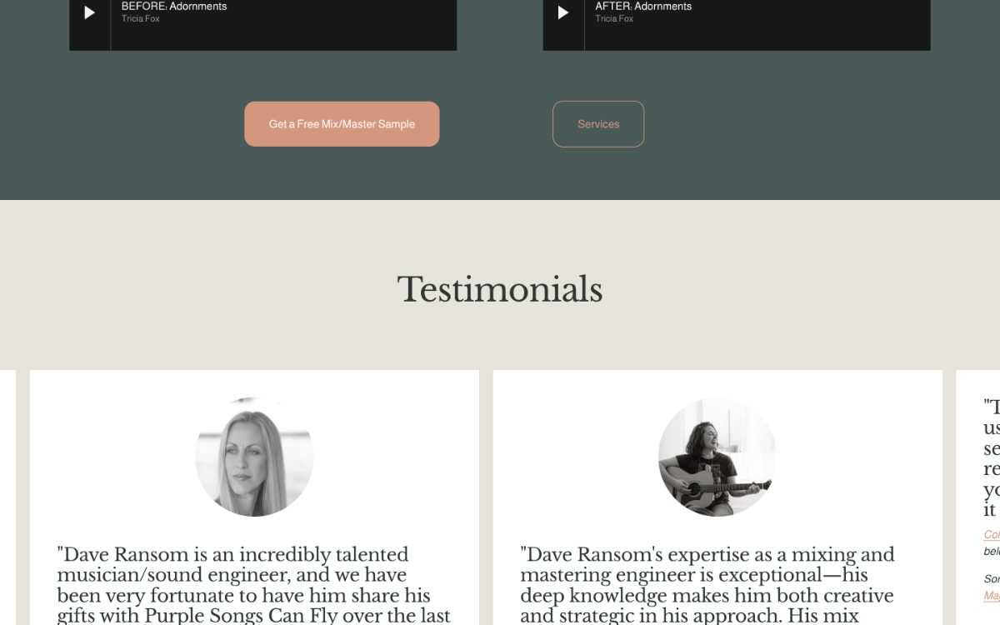
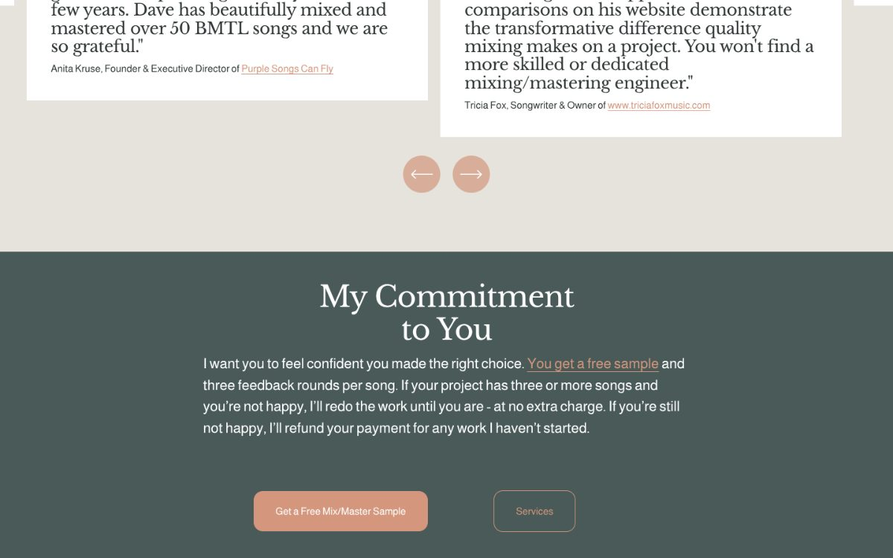
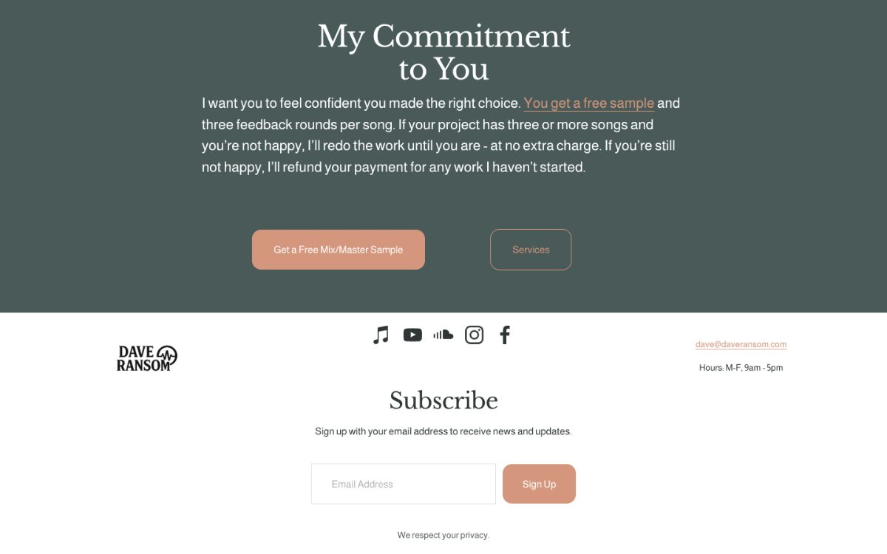
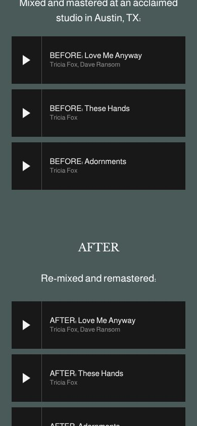
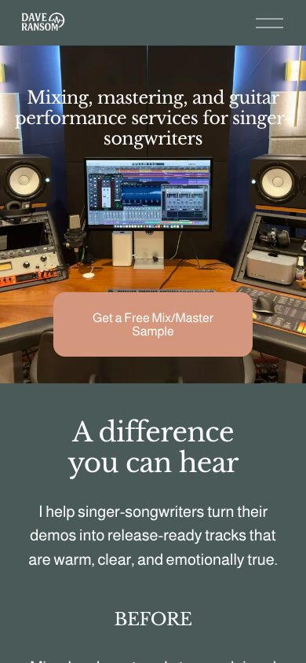
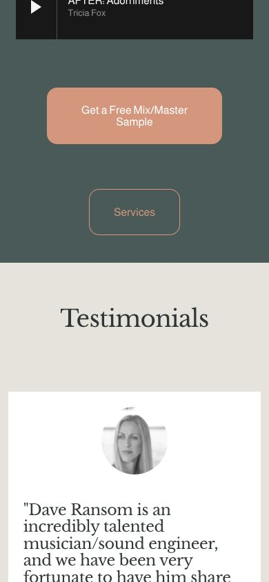
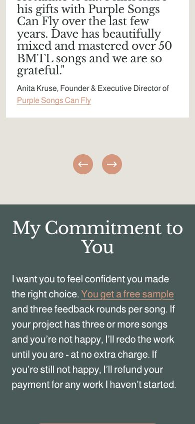

Remake · proof · scored 3 Nov 2026
Remake of www.daveransom.com
Each picture is the original and the remake frozen at the same instant: same clock, same random numbers, videos on their first frame. Drag to compare. Pass mark: 98% of stable pixels on every screen, 95% on every motion frame.
99.9%lowest screen, desktop
100.0%lowest screen, phone
99.9%lowest of 24 motion frames
0%of the site is yours
/ · desktop
lowest 99.93% · height 4019 → 4019px




OriginalRemake

/ · phone
lowest 99.98% · height 4327 → 4327px




OriginalRemake

OriginalRemake
Made with Remake, by Ruben Hassid · How to AI